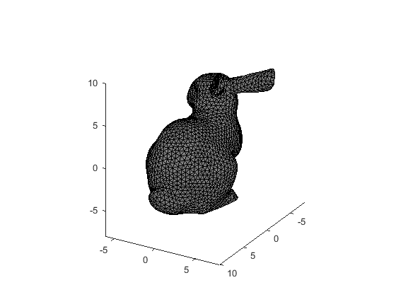
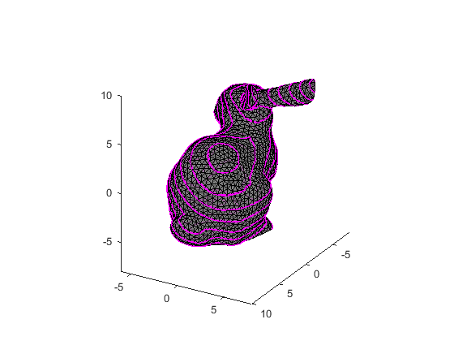

Contents
%DEMO_INTERSECTPLANEMESH_BUNNY One-line description here, please. % % output = demo_intersectPlaneMesh_bunny(input) % % Example % demo_intersectPlaneMesh_bunny % % See also % % ------ % Author: David Legland % e-mail: david.legland@inrae.fr % INRAE - BIA Research Unit - BIBS Platform (Nantes) % Created: 2024-02-16, using Matlab 23.2.0.2459199 (R2023b) Update 5 % Copyright 2024 INRAE.
Read data
% read sample mesh mesh = readMesh('bunny_F5k.ply'); % display mesh using equal-scale axes figure; hold on; axis equal; view(3); drawMesh(mesh, 'faceAlpha', 0.8, 'faceColor', [.5 .5 .5]); axis([-8 10 -6 8 -8 10]); view(120, 25);
Compute plane-mesh intersections
% plane direction vector direction = normalizeVector3d([1 2 3]); % choose several parallel planes positions = -10:1:10; % iterate over planes for iPos = 1:length(positions) % create supporting plane as 1-by-9 rowvector planeOrigin = [0 0 0] + positions(iPos) * direction; plane = createPlane(planeOrigin, direction); % compute intersections polys = intersectPlaneMesh(plane, mesh); % display intersectinos drawPolygon3d(polys, 'lineWidth', 2, 'color', 'm'); end